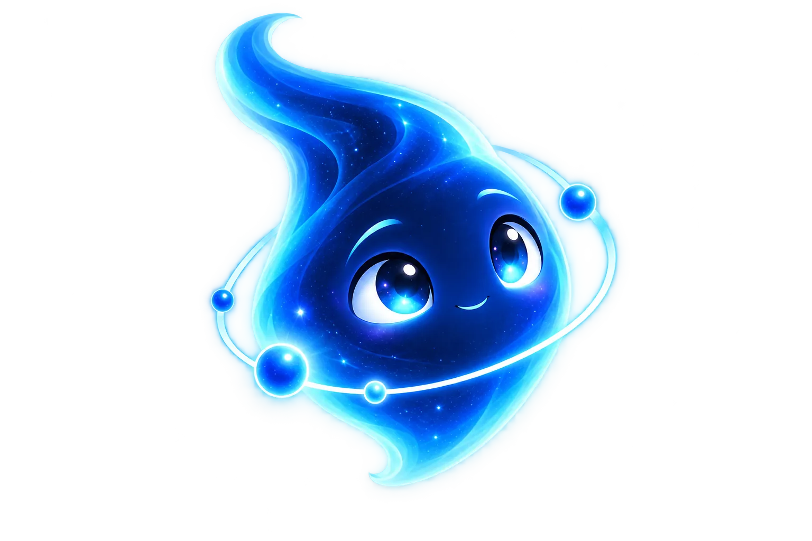

Rápido y sencillo
Selecciona un documento o arrástralo a la página para empezar.
Visualiza tus documentos desde tu navegador.
Sin complicaciones, junto a Blue.
o arrastra y suelta tu archivo aquí
PDF, DOCX, TXT, MD Tamaño máximo: 50 MB
Te ayudo a abrir y ver tus documentos aquí en segundos.
Si tu navegador no muestra el PDF, usa el botón de descarga para abrirlo.
Abre un archivo y concéntrate en lo que importa: tus ideas.
Selecciona un documento o arrástralo a la página para empezar.
Los archivos se procesan en tu navegador; DocBlue no los envía a un servidor.
Una pequeña inteligencia nacida de la imaginación, la curiosidad y la amistad.
Abre el tuyo y empieza a explorar con Blue.